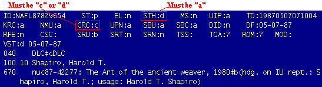

|
If no heading is found, input the heading as on the catalog card and mark o NAF next to it on the LON printout for the reviewing cataloger.
If you have the book in hand, mark the title page form of entry on the LON printout to be submitted to the reviewing cataloger.
